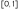

- convolutional generative adversarial network
- pytorch
some information was quoted from this great article (the code was rewritten in pytorch and alot of things differ though!).
essential packages
we need to import some essential packages:
# <<src-activate-venv()>> import matplotlib.pyplot as plt import torch import torch.nn as nn import torch.nn.functional as F torch.manual_seed(0) # for reproducibility
it's common PyTorch practice to initialize a variable, usually named device, that will hold the device we're training on (CPU or GPU).
here, if the machine we're using has a cuda-supported gpu available, we use that, otherwise we use the cpu, this variable stores our choice and is used later to pass data to the training device, if we're training on the cpu, there would be no point in copying the data from the cpu memory to another block of cpu memory, but it would still work.
device = torch.device("cuda:0" if torch.cuda.is_available() else "cpu")
load the data
we start by loading the mnist dataset (the 28x28 images of hand-written digits), we use the torchvision package from pypi which provides various datasets for machine learning
# <<src-essential-imports()>> # <<src-pytorch-init()>> import torchvision.datasets import os.path # download dataset to user's home directory and load it train_dataset = torchvision.datasets.MNIST(root=os.path.expanduser('~'), download=True, train=True) test_dataset = torchvision.datasets.MNIST(root=os.path.expanduser('~'), download=True, train=False) # print some info print('train dataset:', train_dataset) print('train data shape:', train_dataset.data.shape) # show some info about the first image in the train dataset img, label = test_dataset[0] print('img:', img) print('img size:', img.size) print('label:', label)
train dataset: Dataset MNIST
Number of datapoints: 60000
Root location: /home/mahmooz
Split: Train
train data shape: torch.Size([60000, 28, 28])
img: <PIL.Image.Image image mode=L size=28x28 at 0x7F2C4F3D9650>
img size: (28, 28)
label: 7
the function gen_images_img below is used to easily display a number of images in a grid layout:
# generate an image of images and write it to a file def gen_images_img(imgs, out_file, suptitle=None): # make sure images has a size that is divisible by 10 n_cols = 10 n_rows = imgs.shape[0] // n_cols num_imgs = n_rows * n_cols imgs = imgs[:num_imgs] fig = plt.figure(figsize=(n_cols, n_rows)) for i, img in enumerate(imgs): plt.subplot(n_rows, n_cols, 1 + i) plt.axis('off') plt.imshow(img, cmap='gray_r') if suptitle: fig.suptitle(suptitle) plt.savefig(out_file, transparent=True, bbox_inches='tight') return out_file
example usage of the function:
# <<src-load-dataset()>> # <<src-gen-images-img()>> gen_images_img(train_x[:30].cpu().reshape((-1, 28, 28)), f)

discriminator
the discriminator model must take a sample image from our dataset as input and output a classification, a prediction as to whether the sample is real or fake. or perhaps the likelihood of the sample being real, which means the discriminator does binary classification.
pytorch makes defining neural nets easy by inheriting from nn.Module, here, since we're dealing with images, we use convolutional layers, in combinations with dropout layers which arent "mandatory" but they help improve results, the last layers are a flatten layer and a linear layer, the output for a single image would be a float in the range 0-1.
# <<src-essential-imports()>> class Discriminator(nn.Module): def __init__(self): super(Discriminator, self).__init__() self.conv1 = nn.Conv2d(1, 64, (3, 3), stride=(2, 2)) self.dropout1 = nn.Dropout(0.4) self.conv2 = nn.Conv2d(64, 64, (3, 3), stride=(2, 2)) self.dropout2 = nn.Dropout(0.4) self.flatten = nn.Flatten() self.linear = nn.Linear(2304, 1) def forward(self, x): x = F.relu(self.conv1(x)) x = self.dropout1(x) x = F.relu(self.conv2(x)) x = self.dropout2(x) x = self.flatten(x) x = F.sigmoid(self.linear(x)) return x def freeze(self): for p in self.parameters(): p.requires_grad_(False)
because the module inherits from nn.Module, it already is printable and aware of its layers and parameters:
# <<src-discriminator()>> Discriminator()
Discriminator( (conv1): Conv2d(1, 64, kernel_size=(3, 3), stride=(2, 2)) (dropout1): Dropout(p=0.4, inplace=False) (conv2): Conv2d(64, 64, kernel_size=(3, 3), stride=(2, 2)) (dropout2): Dropout(p=0.4, inplace=False) (flatten): Flatten(start_dim=1, end_dim=-1) (linear): Linear(in_features=2304, out_features=1, bias=True) )
compare the output above to the torch-summary package from pypi which provides the summary function in a similar fashion to the keras library:
# <<src-discriminator()>> from torchsummary import summary summary(Discriminator().cuda(), (1, 28, 28))
----------------------------------------------------------------
Layer (type) Output Shape Param #
================================================================
Conv2d-1 [-1, 64, 13, 13] 640
Dropout-2 [-1, 64, 13, 13] 0
Conv2d-3 [-1, 64, 6, 6] 36,928
Dropout-4 [-1, 64, 6, 6] 0
Flatten-5 [-1, 2304] 0
Linear-6 [-1, 1] 2,305
================================================================
Total params: 39,873
Trainable params: 39,873
Non-trainable params: 0
----------------------------------------------------------------
Input size (MB): 0.00
Forward/backward pass size (MB): 0.22
Params size (MB): 0.15
Estimated Total Size (MB): 0.37
----------------------------------------------------------------
a simple feed-forwarding test with a random tensor:
# <<src-discriminator()>> disc = Discriminator() t = disc(torch.randn(1, 1, 28, 28)) print(t.shape) print(t)
torch.Size([1, 1]) tensor([[0.4682]], grad_fn=<SigmoidBackward0>)
the output tensor is simple a one-element (batched) tensor, as expected.
we could start training this model with real examples with a class label of one (for real) and randomly generated samples with a class label of zero (for fake).
we prepare the inputs and the desired outputs (x's and y's) of the network and copy them to the device that is used for training (could be gpu or cpu depending on the machine)
# <<src-load-dataset()>> # copy the data from the mnist dataset for further manipulation # .detach().clone() is the recommended way of cloning a tensor with pytorch train_x = train_dataset.data.detach().clone().to(device) train_y = train_dataset.targets.detach().clone().to(device)
as the values in the original images range from 0 to 255 (for grayscale colors), we must normalize the data before training, we map those values onto the interval  which is easier to work with, this is standard practice in ML. we also need to expand the dimensions of the images into 3d because our models expect 3d tensors and the mnist dataset only contains 2d greyscaled images, so a batch of images would be of 4 dimensions:
# <<src-make-training-tensors()>> # here, None means insert a new dimension, : means keep the original dimension, so we're adding a new dimension at position 2 (the old dimension of index 2 gets shifted into index 3) and preserving the ones at 0,1 train_x = train_x[:, None, :, :] train_x = train_x / 255.0 print('before:', train_dataset.data.shape) print('after:', train_x.shape)
before: torch.Size([60000, 28, 28]) after: torch.Size([60000, 1, 28, 28])
training the discriminator
we could systematically enumerate all samples in the training dataset, and that is a good approach, but good training via stochastic gradient descent requires that the training dataset be shuffled prior to each epoch. a simpler approach is to select random samples of images from the training dataset.
the generate_real_samples_for_discriminator() function below takes the training dataset as an argument and selects a random subset of images; it also returns class labels for the images, specifically a class label of 1, to indicate that the images are real.
def generate_real_samples_for_discriminator(dataset, n_samples): random_indicies = torch.randint(dataset.shape[0], (n_samples,)) x = dataset[random_indicies] y = torch.ones((n_samples, 1)) return x, y
we also need a source of fake images. we can generate images comprised of random pixel values, specifically random pixel values in the range [0,1] like our normalized real images.
the generate_fake_samples_for_discriminator() function below implements this behavior and generates images of random pixel values and their associated class label of 0, for fake.
def generate_fake_samples_for_discriminator(n_samples): x = torch.randn((n_samples, 1, 28, 28)) y = torch.zeros((n_samples, 1)) return x, y
finally, we need to train the discriminator model. this involves repeatedly retrieving samples of real images and samples of generated (fake) images and updating the model for a fixed number of iterations.
we will ignore the idea of epochs for now (e.g. complete passes through the training dataset) and fit the discriminator model for a fixed number of batches. the model will learn to discriminate between real and fake images rapidly and it doesnt take many batches before it learns to discriminate perfectly.
the train_discriminator() function implements this, using a batch size of 256 images where 128 are real and 128 are fake each iteration.
we update the discriminator separately for real and fake examples so that we can calculate the accuracy of the model on each sample prior to the update. this gives insight into how the discriminator model is performing over time. we also use the matplotlib library to plot the loss over time.
# <<src-normalize-training-tensors()>> # <<src-gen-real-samples()>> # <<src-gen-fake-samples-for-discriminator()>> # <<src-discriminator()>> def train_discriminator(model, dataset, n_iter=100, batch_size=256): half_batch = int(batch_size / 2) # use the stochastic gradient descent optimizer optimizer = torch.optim.SGD(model.parameters(), lr=0.002) # use the squared error loss function loss_fn = nn.MSELoss() # to store loss history real_loss_hist = [] # loss of classification of real images fake_loss_hist = [] # loss of classification of fake images # each iteration handles a batch, but each batch is basically half real half fake images, so kinda 2 batches for i in range(n_iter): # grab real samples X_real, y_real = generate_real_samples_for_discriminator(dataset, half_batch) X_real = X_real.to(device) y_real = y_real.to(device) # train on real samples # zero your gradients for every batch! optimizer.zero_grad() # make predictions for this batch outputs = model(X_real) # compute the loss and its gradients loss_real = loss_fn(outputs, y_real) loss_real.backward() # adjust learning weights optimizer.step() # grab fake samples X_fake, y_fake = generate_fake_samples_for_discriminator(half_batch) X_fake = X_fake.to(device) y_fake = y_fake.to(device) # train on fake samples optimizer.zero_grad() # make predictions for this batch outputs = model(X_fake) # compute the loss and its gradients loss_fake = loss_fn(outputs, y_fake) # compute the gradients (backpropagation) loss_fake.backward() # adjust learning weights optimizer.step() # .numpy() to make tensors usable by matplotlib real_loss_hist.append(loss_real.item()) fake_loss_hist.append(loss_fake.item()) # print(f'loss fake: {loss_fake}, loss real: {loss_real}') return real_loss_hist, fake_loss_hist
an example run of the function:
# <<src-train-discriminator()>> model = Discriminator().to(device) real_loss_hist, fake_loss_hist = train_discriminator(model, train_x, n_iter=500) plt.figure() plt.plot(real_loss_hist, label='real images') plt.plot(fake_loss_hist, label='fake images') plt.xlabel('iteration') plt.ylabel('loss') plt.title('discriminator classification loss per batch/iteration') plt.legend() plt.savefig(f, transparent=True) f

as we can see, the loss gradually declines which means the discriminator (theoretically) gets better at recognizing fake images from real ones.
generator
the generator model is responsible for creating new, fake but plausible images of handwritten digits. it does so by taking a point from the latent space as input and outputting a tensor representing a grayscale image.
the latent space is an arbitrarily defined finite vector space. it has no meaning, but by drawing points from this space and feeding them to the generator model during training, the generator model will assign meaning to the latent points and, in turn, to the latent space. at the end of training, the latent vector space would have an internal structure that is a compressed representation of the output space (the MNIST image dataset), that only the generator knows how to turn into plausible images that fool the discriminator.
in our case, developing a generator model requires that we transform a vector from the latent space to a 2D array with 28x28 values that represent a grayscale image. there are a number of ways to achieve this but there is one approach that has proven effective in deep convolutional generative adversarial network. it involves two main elements:
- first, we use a dense layer as the first hidden layer that has enough nodes to represent a low-resolution version of the output image. specifically, an image half the size (one quarter the area) of the output image.
- second, we dont just want one low-resolution version of the image; we want many parallel versions or interpretations of the input. this is a pattern in convolutional neural networks where we have many parallel filters resulting in multiple parallel activation maps, called feature maps, with different interpretations of the input. we want the same thing in reverse: many parallel versions of our output with different learned features that can be collapsed in the output layer into a final image.
therefore, the first hidden layer (the dense one) needs enough nodes for multiple low-resolution versions of our output image, in our case 128 images sized 7x7 (or more accurately, 1x7x7), so there would be a total of 6272 nodes in our first dense layer.
the activations from these nodes can then be reshaped into something image-like to pass into a convolutional layer, such as 128 different 7x7 feature maps.
the next major architectural innovation involves upsampling the low-resolution image to a higher resolution version of the image. there are two common ways to do this upsampling process, sometimes called deconvolution. one way is to use a 2d Upsample layer (like a reverse pooling layer) followed by a normal Conv2d layer. the other and perhaps more modern way is to combine these two operations into a single layer, called a ConvTranspose2d. we will use this latter approach for our generator.
the ConvTranspose2d layer can be configured with a stride of (2x2) that will quadruple the area of the input feature maps (double their width and height dimensions). it is also good practice to use a kernel size that is a factor of the stride (e.g. double) to avoid a checkerboard pattern that can be observed when upsampling. we also use a padding of 1x1 in correspondance with the stride size of 2x2 in the hidden layers to preserve the size of the output of the convolution operation.
this pattern of upsampling can be repeated to arrive at our 28x28 output image.
the output layer of the model is a Conv2d with one filter and a kernel size of 7x7 and padding of size 1x1, designed to create a single feature map and preserve its dimensions at 28x28 pixels that represent our final grayscale image. a sigmoid activation is used to ensure output values are in the desired range of [0,1].
class Generator(nn.Module): def __init__(self, latent_size): super(Generator, self).__init__() self.linear1 = nn.Linear(latent_size, 128 * 7 * 7) self.conv_tr_2d_1 = nn.ConvTranspose2d(128, 128, (4,4), stride=(2,2), padding=(1,1)) self.conv_tr_2d_2 = nn.ConvTranspose2d(128, 128, (4,4), stride=(2,2), padding=(1,1)) self.conv2d = nn.Conv2d(128, 1, (7,7), padding=(3,3)) self.latent_size = latent_size def forward(self, x): # foundation for 128 images of size 7x7, so 128x7x7 images in total which resemble the features of the desired output image (which is an image of a digit 0-9) # we need to pad the images properly.. x = self.linear1(x) # NOTE: why does uncommenting the following line, which results in the first layer having an activation function, mess up the whole model and cause it to diverge and spiral into chaos? i havent figured this out yet # x = F.leaky_relu(x) x = x.view((-1, 128, 7, 7)) # upscale to 14x14 x = self.conv_tr_2d_1(x) x = F.leaky_relu(x, 0.2) # upscale to 28x28 x = self.conv_tr_2d_2(x) x = F.leaky_relu(x, 0.2) # final conv layer - output layer x = self.conv2d(x) # was sigmoid, switched to tanh, NOTE: why does using sigmoid (yet again, see note above) to not converge? x = F.tanh(x) # final output should be of size batch_sizex1x28x28 return x
printing a summary of the model:
# <<src-discriminator-summary()>> # <<src-generator()>> summary(Generator(100).to(device), (1, 100)) # forwarding test of a randomly perturbed noise vector
----------------------------------------------------------------
Layer (type) Output Shape Param #
================================================================
Linear-1 [-1, 1, 6272] 633,472
ConvTranspose2d-2 [-1, 128, 14, 14] 262,272
ConvTranspose2d-3 [-1, 128, 28, 28] 262,272
Conv2d-4 [-1, 1, 28, 28] 6,273
================================================================
Total params: 1,164,289
Trainable params: 1,164,289
Non-trainable params: 0
----------------------------------------------------------------
Input size (MB): 0.00
Forward/backward pass size (MB): 1.01
Params size (MB): 4.44
Estimated Total Size (MB): 5.45
----------------------------------------------------------------
the input to the generator needs to be vectors generated from the latent space. the generate_latent_points() function below implements this and generates a batch with the desired number of points in the latent space that can be used as input to the generator model.
def generate_latent_points(latent_size, n_points): return torch.randn((n_points, latent_size))
next, we can use the generated points as input to the generator model to generate new samples. we write the function generate_fake_samples_with_generator() which takes the generator model as an argument and uses it to generate the desired number of samples by first calling the generate_latent_points() function to generate the required number of points in latent space as input to the model. typically this function would be useful after the generator has been trained.
# <<src-generate-latent-points()>> def generate_fake_samples_with_generator(generator, n_samples): generator_in = generate_latent_points(generator.latent_size, n_samples) generator_out = generator(generator_in) labels = torch.zeros((n_samples, 0)) # label 0 for fake return generator_out, labels
to show a few randomly perturbed images (the generator hasnt been trained yet):
# <<src-generator()>> # <<src-gen-real-samples()>> # <<src-gen-fake-samples-with-generator()>> # <<src-gen-images-img()>> generator = Generator(100) n_samples = 30 X, _ = generate_fake_samples_with_generator(generator, n_samples) gen_images_img(X.reshape((-1, 28, 28)), f)

training the generator
to train the generator, we need to attach it to the discriminator in a sequential manner, such that the output of the generator would be forwarded to the discriminator for classification, the discriminator would determine whether the data generated by the generator passes as a real image. this is why the training of disciminator beforehand to classify real data from fake ones is cruical, otherwise the generator wouldnt learn (this is one approach, another is described later).
during the training of the generator, we may want to freeze the parameters of the discriminator, because we wouldnt want the discriminator training and overfitting on fake data.
so the next step is constructing the full generational model by composing the generator and discriminator into one model.
class GAN(nn.Module): """generative adversarial network model""" def __init__(self, generator, discriminator): super(GAN, self).__init__() self.discriminator = discriminator self.generator = generator def forward(self, x): x = self.generator(x) x = self.discriminator(x) return x
its that simple, a sequential composition of the two models.
def train_generator(gan, n_iters=100, batch_size=256): # use the stochastic gradient descent optimizer with a learning rate of 0.0002 optimizer = torch.optim.SGD(gan.generator.parameters(), lr=0.0002) # our loss function, the Binary Cross Entropy function loss_fn = nn.BCELoss() # tracking loss history loss_hist = [] # we train on one batch per iteration for i in range(n_iters): x = generate_latent_points(gan.generator.latent_size, batch_size).to(device) # the desired outputs are 1, for 'real', since our goal is to adjust the weights and generate images which pass as 'real' y = torch.ones((batch_size, 1)).to(device) # zero your gradients for every batch! optimizer.zero_grad() # make predictions for this batch out = gan(x) # compute the loss and its gradients loss = loss_fn(out, y) # compute the gradients loss.backward() # adjust learning weights optimizer.step() loss_hist.append(loss.item()) return loss_hist
an example usage:
# <<src-train-discriminator()>> # <<src-generate-latent-points()>> # <<src-generator()>> # <<src-gan()>> # <<src-train-generator()>> latent_size = 100 discriminator = Discriminator().to(device) train_discriminator(discriminator, train_x, n_iter=1000) discriminator.freeze() generator = Generator(latent_size) gan = GAN(generator, discriminator).to(device) loss_hist = train_generator(gan, 500, 256) # increase 500 for better results plt.figure() plt.plot(loss_hist) plt.savefig(f, transparent=True) f

in theory, this could work, in practice, i had trouble getting sensible results:
# <<src-train-generator-2()>> imgs = generator(torch.randn((30,1,100)).to(device)).detach().cpu() gen_images_img(imgs.reshape((-1, 28, 28)), f) f
 after 5000 batches these were the results i got, which arent much, with further training i could've gotten better results, but i needed a better approach to get faster convergence.
after 5000 batches these were the results i got, which arent much, with further training i could've gotten better results, but i needed a better approach to get faster convergence.
as we're only training the generator on random inputs, and the discriminator stays frozen, only one competitor is making progress, whereas if the two were competing, as in a true zero-sum game, we'd get better results, because as the discriminator gets better, the generator would also need to get better in order to be able to fool its competitor, so a better approach would be to train both at the same time, and to train the discriminator on the outputs of the generator, which we label as fake, so that it'd get better at detecting the generator's attempts at fooling it, which in turn makes the generator get better at trying to fool the discriminator.
the following method, train_gan, implements this approach, and on each epoch (iteration through the entire dataset), it generates some samples for later evaluation (ofcourse a better approach would be to copy the model itself), for further appreciation and more insight into how the model's output changes over epochs.
def train_gan(gan, dataset, epochs=10, batch_size=256): loss_fn = nn.BCELoss() # why does using SGD slow down training? generator_optimizer = torch.optim.Adam(gan.generator.parameters(), lr=0.0002) discriminator_optimizer = torch.optim.Adam(gan.discriminator.parameters(), lr=0.0002) batches_per_epoch = int(dataset.shape[0] // batch_size) loss_hist = [] # loss history per epoch sample_sets = [] # sets of samples for each epoch # the 50 points from the latent space to use for the image samples in sample_sets sample_set_points = torch.randn((50,gan.generator.latent_size)).to(device) for epoch in range(epochs): loss = 0 for batch_i in range(batches_per_epoch): # generate fake images img_shape = dataset.shape[1:] batch_latent_points = torch.randn((batch_size,gan.generator.latent_size)).to(device) # train generator # zero your gradients for every batch! generator_optimizer.zero_grad() # make predictions for this batch generator_out = gan.generator(batch_latent_points) gan_out = gan.discriminator(generator_out) # compute the loss and its gradients gan_loss = loss_fn(gan_out, torch.ones((batch_size, 1)).to(device)) gan_loss.backward() # adjust learning weights generator_optimizer.step() # train discriminator on fake images batch_fake_imgs = generator_out.detach() discriminator_optimizer.zero_grad() discriminator_out_fake = gan.discriminator(batch_fake_imgs) discriminator_loss_fake = loss_fn(discriminator_out_fake, torch.zeros((batch_size,1)).to(device)) discriminator_loss_fake.backward() discriminator_optimizer.step() # train discriminator on real images batch_real_imgs = dataset[batch_i*batch_size:(batch_i+1)*batch_size] discriminator_optimizer.zero_grad() discriminator_out_real = gan.discriminator(batch_real_imgs) discriminator_loss_real = loss_fn(discriminator_out_real, torch.ones((batch_size,1)).to(device)) # loss = (discriminator_loss_fake + discriminator_loss_real) / 2 discriminator_loss_real.backward() discriminator_optimizer.step() # print batch summary # print(f'epoch {epoch}, batch {batch_i}, discriminator loss {discriminator_loss_fake.item()}, generator loss {gan_loss.item()}') loss += (discriminator_loss_fake.item() + discriminator_loss_real.item() + gan_loss.item()) / 3 loss /= batches_per_epoch # i dont think this is necessary as the loss is averaged over the batch by default (but it doesnt affect the model) loss_hist.append(loss) sample_set = generator(sample_set_points) sample_sets.append(sample_set.detach().cpu().clone()) return sample_sets, loss_hist
i did a test run of 10 epochs:
# <<src-train-discriminator()>> # <<src-generate-latent-points()>> # <<src-generator()>> # <<src-gan()>> # <<src-train-gan()>> # <<src-gen-images-img()>> import os.path import time start_time = time.time() discriminator = Discriminator() latent_size = 40 epochs = 100 generator = Generator(latent_size) gan = GAN(generator, discriminator).to(device) sample_sets, loss_hist = train_gan(gan, train_x, epochs) plt.figure() plt.plot(loss_hist) plt.savefig(f, transparent=True) print(f'[[{f}]]') for i, collage in enumerate(sample_sets): filename = os.path.join(d, f'{i}.png') gen_images_img(collage.view((-1, 28, 28)), filename) print(f'samples after epoch {i+1}:') print(f'[[{filename}]]') print(f'---time elapsed: {time.time() - start_time} seconds ---')
 samples after epoch 1:
samples after epoch 1:
 samples after epoch 2:
samples after epoch 2:
 …
…
…
…
samples after epoch 99:
 samples after epoch 100:
samples after epoch 100:
 —time elapsed: 7404.322350978851 seconds —
—time elapsed: 7404.322350978851 seconds —
in hindsight, i should've separated the different losses and plotted the discriminator's and the generator's losses each with its own graphs, because it makes no sense that the loss only goes up, but it happens because the discriminator gets better at its job faster than the generator and so the generator's loss goes up.
but the results are interesting, even after the first epoch, we can see that the model has already picked up on some subtle curvy patterns in the center of the image. we could have gotten better results with a few more training epochs and some luck.
performance evaluation
generally, there are no objective ways to evaluate the performance of a GAN model. we cannot calculate this objective error score for generated images. it might be possible in the case of MNIST images because the images are so well constrained, but in general, it is not possible (yet).
instead, images must be subjectively evaluated for quality by a human agent. this means that we cannot know when to stop training without looking at examples of generated images. in turn, the adversarial nature of the training process means that the generator is changing after every batch, meaning that once "good enough" images can be generated, the subjective quality of the images may then begin to vary, improve, or even degrade with subsequent updates.
latent output space visualization
while we cant visualize dimensions higher than 3d, and while computer screens are 2d, we can still try to explore higher dimensions by "navigating" them and projecting the results. by navigation i mean choosing an axis and "hovering" over its possible values while holding the other variables constant, to see how the changes to the variable that corresponds to the axis we chose affect the space we project.
def generate_traces(): # size of linspace to generate num_points = 50 # our point, we will manipulate the number at the first index latent_point = torch.randn((latent_size,)).to(device) all_latent_points = latent_point.repeat(num_points, 1) lin = torch.linspace(-1, 1, steps=num_points) for i, point in enumerate(all_latent_points): # update the value only for half the axes for j in range(len(point)//2): point[j] = lin[i] return all_latent_points.detach().cpu(), generator(all_latent_points).detach().cpu() import plotly.graph_objects as go fig = go.Figure() xs, ys = generate_traces() # add "traces", one for each slider step for i in range(len(xs)): fig.add_trace(go.Heatmap(z=ys[i].view((28, 28)).numpy(), colorscale='gray', visible=False, zmin=-1, zmax=1, showscale=False)) # make 10th trace visible fig.data[10].visible = True # create and add slider steps = [] for i in range(len(fig.data)): step = dict( method="update", args=[{"visible": [False] * len(fig.data)}], # {"title": "slider switched to step: " + str(i)}], # layout attribute ) step["args"][0]["visible"][i] = True # toggle i'th trace to "visible" step['label'] = f'{xs[i][0].item()}' # the value for the first axis/var, which is the same for half of them steps.append(step) sliders = [dict( active=10, currentvalue={"prefix": "x: "}, # pad={"t": 50}, steps=steps )] fig.update_layout( sliders=sliders ) # fig.show() # you might want to uncomment this and comment the next ones fig.write_html(f) print('visit manually:', f)
visit manually: /home/mahmooz/brain/out/KYJ3p2o.html
if you play with the scroll enough, you may subtly see the shape of one digit morphing into another, this is how the internal structure of a latent space behaves, two points that are close to each other may have a close role in the generator's output space.